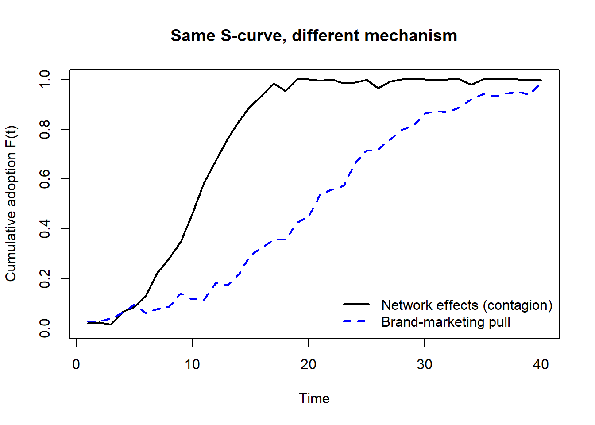

flowchart LR A[Brand identity &<br/>self-expression] --> A1[Apple] A --> A2[Nike] B[Brand extension &<br/>architecture] --> B1[Disney] B --> B2[Amazon] B --> B3[Coca-Cola] C[Authenticity &<br/>social mission] --> C1[Dove] C --> C2[Patagonia] D[Disruption &<br/>category creation] --> D1[Tesla] D --> D2[Warby Parker] D --> D3[Beyond Meat] E[Network effects &<br/>brand-as-platform] --> E1[Airbnb] E --> E2[TikTok] E --> E3[Slack] F[Crisis &<br/>reputation] --> F1[Zoom] F --> F2[McDonald's]
70 Case Studies in Branding
The constructs developed in Chapter 11—brand equity, personality, authenticity, architecture, extensions, crisis, and valuation—are theoretical objects. A case study is where those objects meet a single firm’s history, decisions, and market. This chapter does not treat cases as illustrative anecdotes to be admired; it treats them as evidence, and the central discipline of the chapter is the question every empiricist must ask of a case: what does this firm’s trajectory identify, and what does it merely correlate with? Twenty-one well-known brands—Apple, Nike, Tesla, Amazon, Zoom, Beyond Meat, TikTok, Coca-Cola, Netflix, Airbnb, Starbucks, Disney, McDonald’s, Dove, IKEA, LEGO, Slack, Patagonia, Spotify, Warby Parker, and Allbirds—serve as the corpus. Each is famous, which is precisely the methodological problem we confront first.
A case study, done well, is a theory-testing and theory-generating instrument, not a victory lap. Done badly, it is a retrospective rationalization in which every surviving firm’s choices are reinterpreted as brilliant because the firm survived. By the end of this chapter the reader should be able to: map any brand onto the formal constructs of Chapter 11; recognize the selection and survivorship biases that make naïve case inference invalid; specify what a credible counterfactual for a branding decision would look like; and read a portfolio of cases as a small, non-random sample rather than as a sequence of independent confirmations.
70.1 The Case Method and Its Inferential Hazards
70.1.1 Survivorship and selection
The twenty-one brands here share one trait that no theory predicted in advance: they are all famous and (mostly) successful. This is not a sample drawn from the population of branding strategies; it is a sample drawn from the outcome. Formally, let \(S_i \in \{0,1\}\) indicate that firm \(i\) survived long and visibly enough to become a textbook case, and let \(A_i\) denote the branding action of interest (say, a “Real Beauty” social-mission campaign or a direct-to-consumer launch). Naïve case reading estimates
\[ \mathbb{E}[\,Y_i \mid A_i = 1,\; S_i = 1\,], \tag{70.1}\]
the expected outcome \(Y\) among adopters that we can see. The quantity a strategist actually wants is the unconditional causal effect \(\mathbb{E}[Y_i \mid do(A_i = 1)] - \mathbb{E}[Y_i \mid do(A_i = 0)]\). These coincide only if selection into visibility is independent of the action’s effect—almost never true, because firms become cases because their actions appeared to work. Conditioning on \(S_i = 1\) collides on a common effect of \(A_i\) and the noise that determined success, inducing a spurious association even when \(A_i\) has no true effect. This is the case-study form of the survivorship bias that pervades any analysis restricted to winners.1
A case study is the analysis of a single unit (firm, brand, decision) studied in depth and in context to illuminate a broader class of phenomena. Its evidentiary value comes not from the unit’s representativeness—a single case is never representative—but from the strength of the theoretical mechanism it can confirm, disconfirm, or refine.
70.1.2 Five inferential traps
The traps below recur across every case in this chapter; naming them once lets the later sections stay terse.
| Trap | What it is | Antidote in case work |
|---|---|---|
| Survivorship | Inferring from winners only | Ask what the failed adopters did; treat absence as data |
| Reverse causality | Success builds the brand, not vice versa | Establish temporal order; look for pre-action shocks |
| Confounding | A third factor drives action and outcome | Name the confound explicitly; seek within-firm variation |
| Hindsight coherence | Post hoc narrative makes luck look like strategy | State the ex ante decision and its live alternatives |
| Overfitting to one case | Idiosyncrasy mistaken for law | Require the mechanism to recur across cases |
The remainder of the chapter is organized not by firm but by construct: each section takes one element of branding theory and reads several cases through it, which both exercises the theory and supplies the cross-case replication that a single case cannot. Figure 70.1 maps the constructs to the cases that identify them most cleanly.
70.2 Brand Identity and Self-Expression: Apple and Nike
Chapter 11 distinguishes the functional, emotional, and self-expressive benefits a brand delivers, following D. Aaker (1996), and argues that as mass production commoditizes quality, status accrues less to quality per se and more to the self-expressive component (Holt 1998). Apple and Nike are the canonical cases because each deliberately shifted the locus of its equity from the functional to the self-expressive.
Apple’s “Think Different” positioning is, in the language of Keller (1993), customer-based brand equity built through secondary associations: linking the brand to creative, unconventional cultural figures so that owning the product became an act of identity expression rather than a purchase of compute. The self-congruence mechanism of Grohmann (2009)—response driven by the fit between brand personality and self-concept—predicts exactly the loyalty Apple enjoys, and the firm’s tightly controlled retail and ecosystem design is a sustained investment in the coherence of the personality signal. The reading is clean as theory but treacherous as inference: Apple’s premium pricing and its dependence on a single flagship product (the iPhone) are observationally the same “focus” that the case narrative praises, yet a focused firm that had failed would be cited as a cautionary tale of over-concentration. The construct (self-expressive equity) is real; the inference that focus caused the outcome is not identified by the case alone.
Nike illustrates equity built through storytelling and athlete endorsement, a form of meaning transfer in which a human cue—Michael Jordan, Serena Williams—acts as a conduit of cultural meaning into the brand, the human-cue channel of brand meaning formalized in Chapter 11. Nike’s willingness to take a social stance—the Colin Kaepernick campaign—is a deliberate bet that aligning the brand with a contested value raises self-expressive benefit among the targeted segment more than it erodes equity among others. That bet is a treatment with heterogeneous effects across segments, and its net effect on firm value is an empirical question of the marketing–finance type developed in Chapter 23, not something the campaign’s fame settles.
70.3 Brand Extension and Architecture: Disney, Amazon, Coca-Cola
A brand extension attaches an established name to a new category, and its success turns on perceived fit between parent and extension (D. A. Aaker and Keller 1990), a fit that can be overridden by dominant brand associations (Broniarczyk and Alba 1994). Extensions also feed back on the parent: trial of an extension can raise parent-brand choice—most for prior non-users—while extension failure can spill back negatively, most for loyal users (Swaminathan, Fox, and Reddy 2001). Disney, Amazon, and Coca-Cola span the architecture continuum of Chapter 11 from branded house to house of brands.
Disney is the textbook branded house built for synergy: a character created in film is monetized across parks, merchandise, streaming, and licensing, so the same brand association is amortized over many categories. The acquisitions of Pixar, Marvel, Lucasfilm, and Fox are, in architecture terms, the purchase of high-fit sub-brands—each carries its own associations yet sits under the Disney master brand, the high-risk/high-return position that Hsu, Fournier, and Srinivasan (2015) find creates the most firm value while carrying the most idiosyncratic risk. Amazon is the harder case: its name stretches from books to cloud computing (AWS) to groceries (Whole Foods) to healthcare, distances at which D. A. Aaker and Keller (1990)’s fit logic predicts failure. The resolution is that Amazon’s core association is not a product category but a capability—logistics, convenience, low price—and Broniarczyk and Alba (1994)’s result is precisely that a brand association strong enough to create fit overrides category distance. Coca-Cola sits between, using endorsed branding and a house of brands (Sprite, Fanta, Dasani) to enter categories where the flagship’s associations would not transfer, exactly the risk-management rationale Hsu, Fournier, and Srinivasan (2015) attach to graphically subordinate parents.
The comparison clarifies a point a single case obscures: extension success is not a property of the name but of the transferable association, and architecture is the managerial instrument for matching association to category.
70.5 Disruption and Category Creation: Tesla, Warby Parker, Beyond Meat
Some brands do not compete within a category; they create or redefine one. The relevant theory is less about fit and more about the brand as the organizing symbol of a new category, and about the direct-to-consumer (DTC) model that lets a young brand own the customer relationship. Tesla, Warby Parker, and Beyond Meat are three DTC-or-disruption cases at very different capital intensities.
Tesla’s brand fuses technology, luxury, and a sustainability mission, and its direct sales model—bypassing dealers—is a branding decision as much as a distribution one: it lets the firm control the meaning of the product at the point of sale rather than delegating it to a third party. Warby Parker’s “Home Try-On” and “Buy a Pair, Give a Pair” combine a DTC eyewear offer with a credible social signal, the same authenticity-through-cost logic that operates for Patagonia. Beyond Meat illustrates category creation under a perception constraint: its branding must position plant-based products to meat-eaters, not vegetarians, which is a deliberate widening of the target segment that trades on functional parity (taste, texture) plus a self-expressive/ethical benefit. Across all three, the inferential hazard is acute. These are the survivors of a DTC and disruption wave that included many funded failures; Equation 70.1 warns that reading “DTC + social mission \(\Rightarrow\) success” off the survivors conditions on the very outcome we want to explain. The construct (brand-led category creation) is identified by these cases; the success rate of the strategy is not.
70.6 Brand as Platform: Airbnb, TikTok, Slack
For two-sided and content platforms, the brand is inseparable from network effects and from the brand community mechanisms of Chapter 11, where engagement is sustained partly through oppositional loyalty and shared identity (Muniz and O’Guinn 2001). Online brand-related activity itself ranges from passive consuming to active creating, and platform brands live or die on moving users up that ladder.
Airbnb’s brand asset is trust at scale: reviews, verification, and host education are the institutional substitutes for the reputation a hotel chain supplies through a uniform brand. TikTok’s brand is, unusually, identified with its algorithm—the “For You” feed is the product and the personality simultaneously—so its equity is co-produced by users whose created content is the brand’s primary asset, the creating rung of online brand-related activity. Slack grew through a freemium model in which the free tier is a customer-acquisition instrument and the brand community (integrations, workplace norms) raises switching costs. In all three, brand value compounds with installed base, so a naïve case reading attributes to branding what is partly mechanical network growth. Distinguishing the two is the central identification problem for platform brands and is exactly why these cases must be read with the reverse-causality trap of the comparison table held in view: success grew the brand at least as much as the brand grew success.
Code
set.seed(44)
# Two generative mechanisms for cumulative adoption F(t) in [0,1].
TT <- 1:40
# (1) Network/word-of-mouth (Bass-style internal influence): growth proportional
# to current adopters times remaining market.
p <- 0.01; q <- 0.40
F_net <- numeric(length(TT)); F_net[1] <- p
for (t in 2:length(TT)) {
inc <- (p + q * F_net[t - 1]) * (1 - F_net[t - 1])
F_net[t] <- min(1, F_net[t - 1] + inc)
}
# (2) Pure brand-marketing pull: logistic response to cumulative ad/brand effort,
# with no adopter-to-adopter contagion. Tuned to a similar midpoint.
effort <- cumsum(rep(0.18, length(TT)))
F_brand <- 1 / (1 + exp(-(effort - mean(effort))))
# Add modest measurement noise; clamp to the unit interval.
noisify <- function(x) pmin(1, pmax(0, x + rnorm(length(x), 0, 0.015)))
F_net_obs <- noisify(F_net)
F_brand_obs <- noisify(F_brand)
plot(TT, F_net_obs, type = "l", lwd = 2,
xlab = "Time", ylab = "Cumulative adoption F(t)",
main = "Same S-curve, different mechanism", ylim = c(0, 1))
lines(TT, F_brand_obs, lwd = 2, lty = 2, col = "blue")
legend("bottomright", bty = "n", lwd = 2, lty = c(1, 2),
col = c("black", "blue"),
legend = c("Network effects (contagion)", "Brand-marketing pull"))
cor_two <- cor(F_net_obs, F_brand_obs)
cat("Correlation between the two trajectories:", round(cor_two, 3), "\n")
#> Correlation between the two trajectories: 0.807
The two simulated curves in Figure 70.2 are nearly indistinguishable by eye and highly correlated, yet they arise from entirely different mechanisms. This is the formal content of the reverse-causality warning: observing a single platform brand’s S-shaped rise tells the analyst almost nothing about whether brand or network drove it. Identification requires variation the case alone does not provide—exogenous shifts in marketing effort, or cross-market differences in seeding.
70.7 Crisis, Reputation, and Recovery: Zoom and McDonald’s
Brand crises spill across a firm’s segments and brands, and consumers interpret a firm’s response through their prior expectations of the firm (Dawar and Pillutla 2000; Borah and Tellis 2016). On social media, response style—active listening, empathy—shapes recovery, and managers who respond to reviews gain on average but receive fewer, longer negative reviews thereafter as complainers anticipate scrutiny (Proserpio and Zervas 2017). Zoom and McDonald’s are crises of opposite character.
Zoom faced an acute, security-driven crisis—“Zoombombing” and encryption scrutiny—during the very surge that made it a household name. Its recovery followed the Dawar and Pillutla (2000) logic: because the firm’s prior reputation was for reliability and ease of use, a credible, rapid response (a security freeze and transparent remediation) was read as consistent with the brand’s character and limited the spillover. McDonald’s faces a chronic, structural reputation tension—nutrition and labor criticism—rather than a discrete shock, and its management is therefore a matter of sustained portfolio and menu signaling rather than crisis response. The contrast sharpens a construct distinction from Chapter 11: reputation is a slow-moving global evaluation spanning positive and negative, whereas a crisis is a shock to it; the optimal response differs because the former is managed by consistency over years and the latter by expectation-consistent action in days.
70.8 Reading a Portfolio of Cases as Evidence
The cases not foregrounded above—Starbucks’s “third place” and loyalty program, IKEA’s design-from-the-price-tag-up model, LEGO’s community-driven product development (LEGO Ideas) and licensing, Netflix’s pivot from DVD to streaming and original content, Spotify’s freemium and personalization, Allbirds’s sustainable-materials positioning, Coca-Cola’s century of iconic advertising—each re-instantiates one of the constructs already named: loyalty and habit, cost-driven positioning, brand community and co-creation, business-model pivots, network-plus- brand growth, and costly social signaling. That they replicate the mechanisms is the point. A single case can suggest a mechanism; a portfolio of cases that all bend to the same constructs is what lets the analyst treat those constructs as load-bearing rather than ornamental.
The comparison below summarizes the primary construct and the primary identification hazard for each foregrounded case—the discipline this chapter exists to instill is reading the second column as carefully as the first.
| Case | Primary construct | Primary identification hazard |
|---|---|---|
| Apple | Self-expressive equity (D. Aaker 1996; Holt 1998) | Focus praised only in survivors |
| Nike | Meaning transfer via endorsers (Grohmann 2009) | Stance effect is segment-heterogeneous |
| Disney | Branded house / sub-branding (Hsu, Fournier, and Srinivasan 2015) | Synergy attributed post hoc |
| Amazon | Capability-based fit (Broniarczyk and Alba 1994) | Fit “explained” only after success |
| Dove | Authenticity & CSR motive-reading (Chernev and Blair 2015; Morhart et al. 2015) | Motive discounting unobserved |
| Patagonia | Costly social signaling | Greenwashing counterfactual unseen |
| Tesla / Warby / Beyond | DTC category creation | Survivorship over funded failures |
| Airbnb / TikTok / Slack | Network effects vs. brand (Muniz and O’Guinn 2001) | Reverse causality (Figure 70.2) |
| Zoom / McDonald’s | Crisis vs. chronic reputation (Dawar and Pillutla 2000; Proserpio and Zervas 2017) | Response endogenous to prior reputation |
70.9 Key Takeaways
- A case study is evidence about a mechanism, not proof of a strategy; its value is theoretical leverage, never representativeness.
- Famous-brand cases are sampled on the outcome, so naïve reading conditions on survival (Equation 70.1) and confounds the action with the noise that made the firm visible.
- Each celebrated brand re-instantiates a formal construct from Chapter 11—self- expressive equity, transferable-association fit, costly authenticity signals, network-vs-brand growth, crisis-versus-reputation dynamics—and the construct, not the firm, is what generalizes.
- Platform-brand trajectories are nearly mechanism-blind (Figure 70.2): identifying brand from network requires variation the single case cannot supply.
- Read the identification hazard for every case as carefully as the success story; the financial consequences of branding actions are settled by the methods of Chapter 23, not by a case’s fame.
Aaker, David. 1996. Building Strong Brands. Simon; Schuster.
Aaker, David A., and Kevin Lane Keller. 1990. “Consumer Evaluations of Brand Extensions.” Journal of Marketing 54 (1): 27. https://doi.org/10.2307/1252171.
Borah, Abhishek, and Gerard J. Tellis. 2016. “Halo (Spillover) Effects in Social Media: Do Product Recalls of One Brand Hurt or Help Rival Brands?” Journal of Marketing Research 53 (2): 143–60. https://doi.org/10.1509/jmr.13.0009.
Broniarczyk, Susan M., and Joseph W. Alba. 1994. “The Importance of the Brand in Brand Extension.” Journal of Marketing Research 31 (2): 214. https://doi.org/10.2307/3152195.
Chernev, Alexander, and Sean Blair. 2015. “Doing Well by Doing Good: The Benevolent Halo of Corporate Social Responsibility.” Journal of Consumer Research 41 (6): 1412–25. https://doi.org/10.1086/680089.
Dawar, Niraj, and Madan M. Pillutla. 2000. “Impact of Product-Harm Crises on Brand Equity: The Moderating Role of Consumer Expectations.” Journal of Marketing Research 37 (2): 215–26. https://doi.org/10.1509/jmkr.37.2.215.18729.
Grohmann, Bianca. 2009. “Gender Dimensions of Brand Personality.” Journal of Marketing Research 46 (1): 105–19. https://doi.org/10.1509/jmkr.46.1.105.
Holt, Douglas B. 1998. “Does Cultural Capital Structure American Consumption?” Journal of Consumer Research 25 (1): 1–25. https://doi.org/10.1086/209523.
Hsu, Liwu, Susan Fournier, and Shuba Srinivasan. 2015. “Brand Architecture Strategy and Firm Value: How Leveraging, Separating, and Distancing the Corporate Brand Affects Risk and Returns.” Journal of the Academy of Marketing Science 44 (2): 261–80. https://doi.org/10.1007/s11747-014-0422-5.
Keller, Kevin Lane. 1993. “Conceptualizing, Measuring, and Managing Customer-Based Brand Equity.” Journal of Marketing 57 (1): 1. https://doi.org/10.2307/1252054.
Morhart, Felicitas, Lucia Malär, Amélie Guèvremont, Florent Girardin, and Bianca Grohmann. 2015. “Brand Authenticity: An Integrative Framework and Measurement Scale.” Journal of Consumer Psychology 25 (2): 200–218. https://doi.org/10.1016/j.jcps.2014.11.006.
Muniz, Albert M., and Thomas C. O’Guinn. 2001. “Brand Community.” Journal of Consumer Research 27 (4): 412–32. https://doi.org/10.1086/319618.
Proserpio, Davide, and Georgios Zervas. 2017. “Online Reputation Management: Estimating the Impact of Management Responses on Consumer Reviews.” Marketing Science 36 (5): 645–65. https://doi.org/10.1287/mksc.2017.1043.
Swaminathan, Vanitha, Richard J. Fox, and Srinivas K. Reddy. 2001. “The Impact of Brand Extension Introduction on Choice.” Journal of Marketing 65 (4): 1–15. https://doi.org/10.1509/jmkg.65.4.1.18388.
The point generalizes the well-known critique of input-based brand valuation in Chapter 11: advertising expense looks like it builds brands partly because we observe the survivors who advertised, not the equal-spending firms that disappeared. The same logic applies to celebrated branding tactics.↩︎